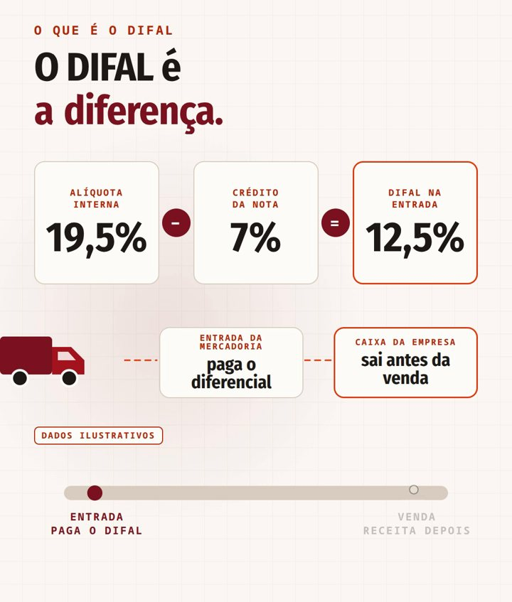
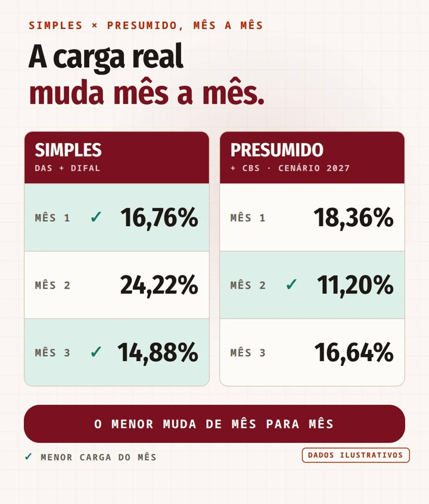
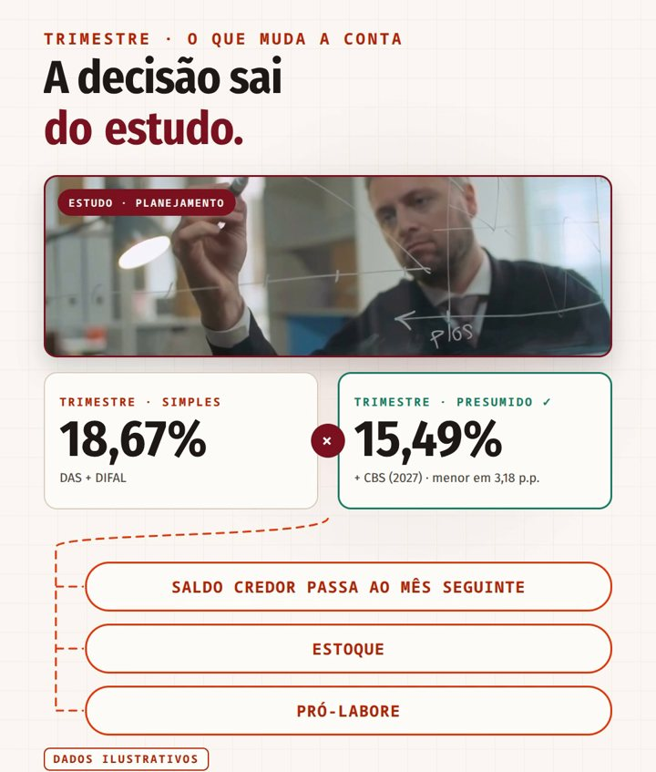
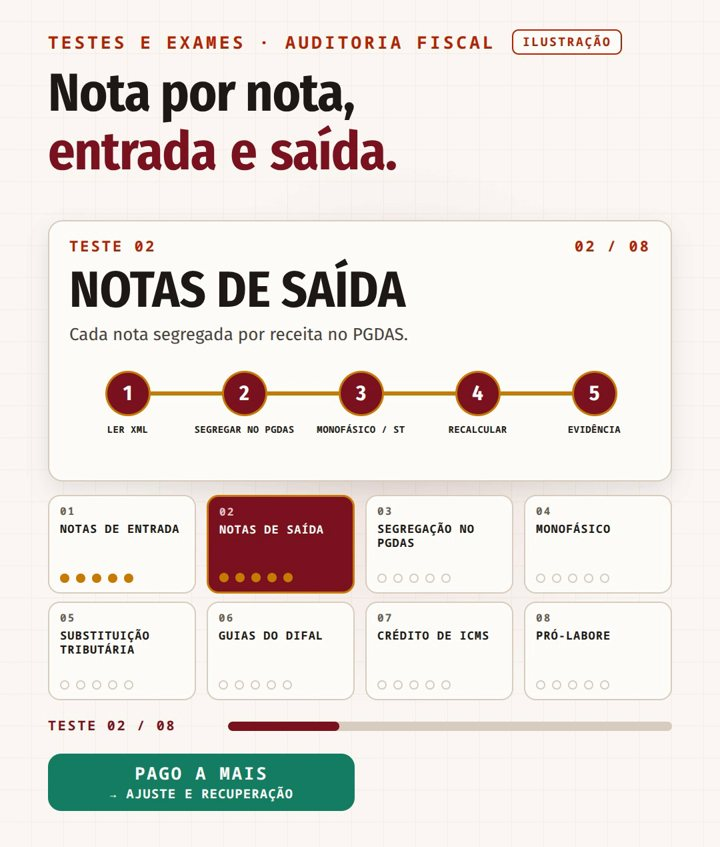

DIFAL no Simples: a carga que o DAS não mostra
Para muita empresa de comércio no Simples Nacional, a pergunta "quanto pagamos de imposto?" tem uma resposta pronta: a alíquota do DAS. Ela aparece no extrato do PGDAS todo mês e costuma ficar abaixo de 10%.
Só que o DAS não é a conta inteira. Quem compra mercadoria de outro estado paga, na entrada, o diferencial de alíquota do ICMS (DIFAL) — e esse valor não aparece no DAS. Somado a ele, a carga real pode chegar perto do dobro do que o empresário imagina.
O que é o DIFAL que o Simples paga
O ICMS de quem está no Simples é recolhido dentro do DAS, mas a própria Lei Complementar nº 123/2006 lista situações em que ele é devido fora do regime. Uma delas é justamente a compra em outro estado: o art. 13, § 1º, XIII, alíneas "g", item 2, e "h", manda cobrar a diferença entre a alíquota interna e a interestadual, vedada a agregação de qualquer valor.

A constitucionalidade dessa cobrança já foi decidida. No Tema 517 da repercussão geral (RE 970.821), o STF fixou que é constitucional o diferencial de alíquota exigido pelo estado de destino da empresa optante pelo Simples, "independentemente da posição desta na cadeia produtiva ou da possibilidade de compensação dos créditos".
Dois efeitos práticos decorrem disso. O primeiro é de caixa: o diferencial sai no momento da entrada da mercadoria, antes de ela ser vendida (alguns estados dão prazo a quem está em dia). O segundo é de custo: ele é imposto pago, e precisa entrar na conta de quanto a empresa realmente recolhe.
A conta que o DAS não mostra
Um estudo de caso ilustrativo, com valores simulados, deixa o efeito visível. Uma empresa de comércio no Anexo I, 4ª faixa (receita dos últimos 12 meses entre R$ 720 mil e R$ 1,8 milhão — alíquota nominal de 10,70%, com R$ 22.500 a deduzir), faturou R$ 155 mil no trimestre analisado e olhava apenas para a alíquota efetiva do DAS: 9,39%. Ao somar o diferencial pago nas compras de fora, o quadro muda:
| Mês | Só o DAS | DAS + diferencial |
|---|---|---|
| Mês 1 | 9,40% | 16,76% |
| Mês 2 | 9,42% | 24,22% |
| Mês 3 | 9,33% | 14,88% |
| Trimestre | 9,39% | 18,67% |
A oscilação entre os meses não é ruído: ela acompanha o volume de compras interestaduais de cada período. No mês de maior reposição de estoque, o diferencial pesa mais que o próprio DAS.
Simples ou Presumido? A resposta muda de mês para mês
Com a carga real em mãos, a comparação de regimes passa a ser honesta. No mesmo estudo ilustrativo, montamos o Lucro Presumido para o comércio — IRPJ sobre presunção de 8% à alíquota de 15%, CSLL sobre 12% a 9%, CBS estimada em 9,25% com crédito nas compras (cenário a partir de 2027, quando a CBS substitui PIS e COFINS), ICMS pelo débito e crédito, com saldo credor passando ao mês seguinte, e contribuição previdenciária de 20% sobre o pró-labore (Lei nº 8.212/1991, art. 22, III), que no Simples do comércio já está dentro do DAS (LC 123/2006, art. 13, VI).
Uma atualização recente: desde 2026, a Lei Complementar nº 224/2025 (art. 4º, § 4º, VII, e § 5º) acrescenta 10% aos percentuais de presunção do Lucro Presumido, mas só sobre a parcela da receita que passa de R$ 5 milhões no ano. Empresas do porte do exemplo não são atingidas — e o Simples Nacional ficou fora dessa redução (art. 4º, § 8º, VI).


O resultado ilustra o ponto central: um mês isolado não decide o regime. No exemplo, o Simples teve a menor carga em dois dos três meses, e ainda assim o trimestre ficou mais leve no Presumido. Mudar de regime com base em um único mês, ou apenas no DAS, é decidir no escuro.
Estoque (comprar muito num mês e pouco no outro), origem das compras (a compra dentro do estado gera crédito maior e não tem diferencial), folha e pró-labore (no Presumido a contribuição previdenciária sai do DAS e vira custo próprio) e a transição da Reforma Tributária. Por isso a decisão sai de um estudo com os dados reais da empresa — não de uma regra de bolso.
O que a auditoria fiscal testa
Comparar regimes é a parte visível. Antes dela, a auditoria fiscal refaz a conta com os documentos: declarações do PGDAS, guias do diferencial e notas fiscais de entrada e de saída, uma a uma.

Notas de entrada × guias do diferencial
Cada guia paga é conferida contra as notas de compra: base, alíquota interna, crédito destacado e se a mesma nota não foi cobrada duas vezes.
Notas de saída × segregação no PGDAS
A LC 123/2006, art. 18, § 4º-A, I, exige segregar a receita de produtos monofásicos e daqueles cujo ICMS já foi recolhido por substituição tributária. Sem a segregação, o DAS cobra de novo o que já foi pago.
Faixa e receita dos últimos 12 meses
A alíquota efetiva depende da receita acumulada. Erro na RBT12 ou na faixa gera diferença no DAS — para mais ou para menos.
Diferencial devido e não recolhido
O teste também procura o contrário: compra de outro estado sem guia correspondente. Isso é risco, e é melhor que apareça na auditoria do que na fiscalização.
Pagou a mais? Pagou a menos?
Quando os testes mostram tributo pago a maior — por cobrança em duplicidade, erro de alíquota, de cálculo ou de segregação —, o Código Tributário Nacional garante a restituição (art. 165, I e II), dentro do prazo de cinco anos (art. 168). Como o ICMS é tributo que comporta transferência do encargo, o art. 166 exige demonstrar quem o suportou — no caso do diferencial, a própria empresa compradora, que não o recupera como crédito no Simples. Quando mostram tributo pago a menos, o caminho é corrigir espontaneamente, antes de uma fiscalização.
Pagar diferencial não dá, por si só, direito a restituição: a cobrança é legal e constitucional. O que pode ser recuperado é o que foi pago a maior — e isso só se prova nota a nota, com memória de cálculo. Desconfie de estimativas que tratam todo o DIFAL dos últimos cinco anos como valor a receber.
Perguntas frequentes
Empresa do Simples paga DIFAL?
Paga, nas compras de mercadoria de outros estados, fora do DAS. A LC 123/2006 (art. 13, § 1º, XIII, "g", 2, e "h") define o valor como a diferença entre a alíquota interna e a interestadual, e o STF confirmou a constitucionalidade da cobrança no Tema 517.
O DIFAL entra na carga tributária do Simples?
Para decidir regime e formar preço, deve entrar. A alíquota do DAS mostra só uma parte; somado o diferencial pago nas compras, a carga real pode ficar bem acima dela.
Dá para pedir de volta o DIFAL pago?
Apenas o que foi pago a maior (duplicidade, erro de base, alíquota ou cálculo), dentro de cinco anos, com prova de quem suportou o encargo (CTN, arts. 165, 166 e 168). O diferencial corretamente calculado é devido.
Sair do Simples reduz o imposto?
Depende. Margem, estoque, origem das compras, folha e pró-labore mudam o resultado, e ele pode variar de um mês para outro. A decisão exige estudo com os dados da empresa.
O que é segregar receitas no PGDAS?
É informar separadamente, na apuração do Simples, as vendas de produtos monofásicos e daqueles com ICMS já recolhido por substituição tributária (LC 123/2006, art. 18, § 4º-A, I), para que o DAS não cobre de novo esses tributos.
Auditoria fiscal para empresas do Simples
A equipe de auditoria fiscal da AUDÍPER confere DAS, diferencial e guias contra as notas de entrada e de saída, mostra a carga real mês a mês e compara os regimes com memória de cálculo.
Falar com a equipe de auditoria fiscalAUDÍPER Auditores Independentes · CRC/PI 000023/O · auditoria independente desde 1989.
Leia também
Planejamento tributário pós-Reforma
Como decidir regime e estrutura com IBS e CBS no horizonte.
Ler artigoRecuperação de crédito tributário
O que pode ser recuperado e como provar o pagamento a maior.
Ler artigoExclusão do ICMS da Base do PIS/COFINS
Como recuperar créditos tributários com base no Tema 69 do STF.
Ler artigo